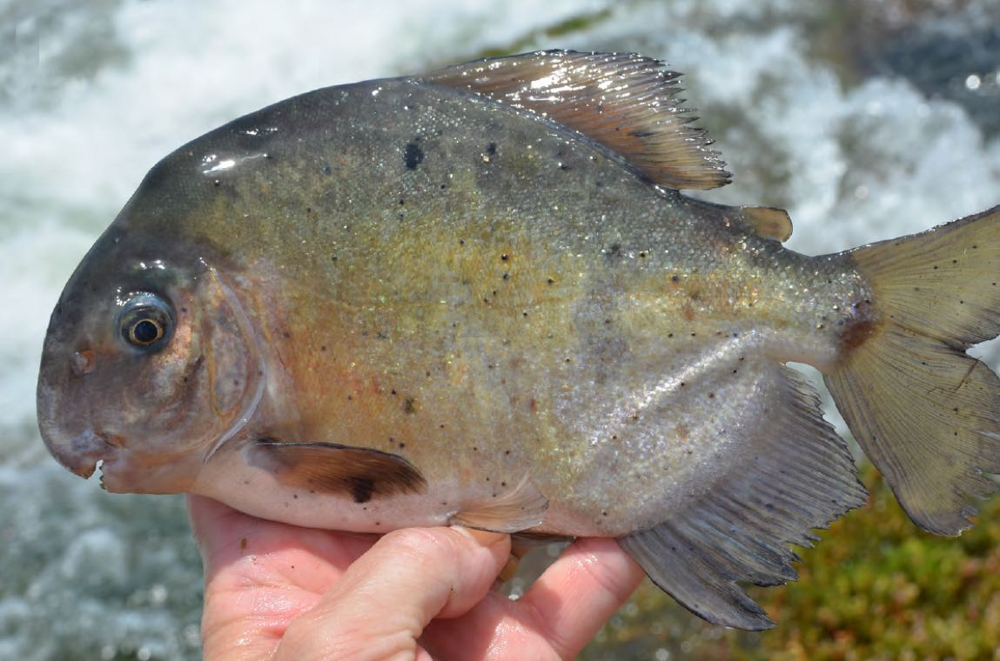

Jonathan M. Huie
The evolution of cleaner fish feeding morphology

Cleared and stained image of the cleaner fish, Elacatinus oceanops.
In cleaning mutualisms, a cleaner fishes eat the ectoparasites of their clients. In the Caribbean and eastern Pacific, gobies are the most prominent cleaners on the reef. However, some species clean more than others. Thus, cleaner gobies vary in their degree of ecological specialization. Here, we asked whether cleaner gobies have feeding morphologies that differ from non-cleaner gobies. We also asked if those that cleaned more had more specialized morphologies.
In general, a high specialized task requires equally specialized equipment. We found this to be the case for cleaner gobies. Obligate cleaners have substantially shorter and stronger jaws than non-cleaners, while facultative cleaner have an intermediate morphology. Cleaner gobies also have a comb-like dentition similar to those found in fishes that scrap algae off of rockes, suggesting that cleaner gobies may have repurposed this scraping morphology for a different kind of prey.
Read more: Huie, J.M., Thacker, C.E., Tornabene, L. (2020). Co-evolution of cleaning and feeding morphology in western Atlantic and eastern Pacific gobies. Evolution, 74(2), 419-433. doi.org/10.1111/evo.13904 Data & Code PDF
Jaw morphology and body shape of herbivorous piranhas

Ossubtus xinguensis, a riverweed-feeding specialist. Photo by Mark Sabaj
South American rivers are home to both piranhas and their herbivorous cousins, the pacus. Most pacus eat fruits and seeds that fall into the river but some feed almost exclusively on riverweed, a plant found only in river rapids. This is highly unusual because areas with extremely high flow are difficult to access. Here, we ask whether riverweed-feeding pacus exhibit distinct feeding morphologies or body shapes that allow them to access this untapped resource.
Surprisingly, we found that changes in feeding morphology had little to do with explaining how and why some pacus are able to feed on riverweed. Instead, species that eat the most riverweed have more streamlined body shapes adapted for living in the rapids. We propose that changes in body shape initially facilitated the consumption of riverweed and that any changes in feeding morphology followed suite.
Read more: Huie, J.M., Summers, A.P., and Kolmann, M.A. (2019). Body shape separates guilds of rheophilic herbivores (Myleinae: Serrasalmidae) better than feeding morphology. Proceedings of the Academy of Natural Sciences of Philadelphia, 166(1), 1-15. doi.org/10.1635/053.166.0116 PDF
Scaling of scale-feeding fish jaw biomechanics

Micro-CT scan of the wimple piranha, Catoprion mento.
Some fish are total jerks and eat the scales off other fishes. Many scale-feeding fishes have evolved some pretty gnarly morphologies. Here, we compared a scale-feeding piranha (Catoprion mento) and a scale-feeding characin (Roeboides affinis) to see if they have anything in common. To do this, we examined the scaling patterns of their jaw biomechanics and compared it to that of their closest relatives.
Event though scale-feeding is a very specific feeding strategy, these fishes have very little in common except for the fact they have highly modified teeth. This result isn't so surprising since the piranha uses its massive lower jaw to pry scales off its prey, while the characin uses its face as a battering ram. However, it suggests that there's more than one way to fill even the narrowest of niches.
Read more: Kolmann, M.A., Huie, J.M., Evans, K., and Summers, A.P. (2018). Specialized specialists and the narrow niche fallacy: a tale of scale-feeding fishes. Royal Society open science, 5(1), 171581. doi.org/10.1098/rsos.171581 Data & Code PDF